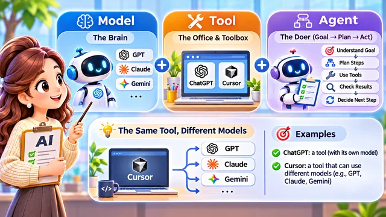

Welcome to Episode 15! You already know how AI answers, how it errs, and how to plan and verify work. Today: who should you “hire” for the next task?
Today we skip the heavy tech lecture and walk a job fair instead — same goal as always: match the task to the right partner, then verify like Episode 13 taught.
Picture a company hiring clever helpers — writers, researchers, designers, coders. They are all AI, but talents differ. We run a job fair, not a beauty contest for one winner.
Some chat warmly; some work quietly in your repo. Others love digging through sources or mixing text with images and sound. The question is not “who is smartest?” but “who fits this brief?”
Episode 11 already warned about the wrong tool. This fair turns that habit into a roster: read the booth, don’t marry the hype.
Episode 12 sharpened your wording; Episode 13 added scope and checklists. Now you choose where those sentences land — chat window, IDE, or search-plus-cite.
Meet the candidates
Candidate 1 — ChatGPT
Friendly explainer for mail, lessons, and brainstorming. But ask it to translate a hundred pages and hear “done!” — then find gaps. Sorry and retry is not a substitute for a checklist.
You point out missing pages; you may get another cheerful “sorry” and another partial pass. Pleasant tone is not a progress bar — pair it with acceptance criteria from Episode 13.
Sycophancy means leaning too hard toward agreement or quick help without naming limits. ChatGPT can still code and analyze — what matters is model, tools, and setup. Style that pleases is not the same as work that is done.
Candidate 2 — Cursor
Fewer pleasantries, more file search and edits — sometimes tests. Built around software work: touching real code beats describing engine noise from an office chair.
Car-repair picture: one helper only hears your description from a desk; another opens the hood and uses tools. Same intelligence, different reach.
Cursor is not infallible. It can misread scope or ship code that runs but misses the goal. Fit comes from the workspace, not only from raw “brain power.”
More applicants
Claude Code — another project-focused engineer: files, terminal, patches, tests when allowed. Gemini — multimodal assistant mixing text, image, and audio in Google’s products. Perplexity — researcher vibe with web search and citations — links are hints, not proof.
Gemini’s multimodal angle helps when the brief mixes words, images, or audio — not every chat box handles that equally.
Sources can be stale; links can be misread. Treat citations as starting points, then open the page and decide for yourself.
Which coding helper wins? Try your repo and compare — UI, workflow, and permissions differ.
All five introduced — now what?
ChatGPT, Cursor, Claude Code, Gemini, Perplexity — different booths, different powers. The reflex is to crown the “smartest” name on the poster.
Hold that hire. These labels are not all the same category — Model, Tool, and Agent sit on different shelves. The fair is about fit, not a single IQ score.
Brand names on the poster change with releases. The categories underneath stay useful: which brain, which workshop, and whether you need someone who keeps looping until checks pass.
You might keep two or three booths on speed dial — one for explaining, one for repos, one for fresh sources — and still refuse to crown a permanent “winner.”
Next: one chart for Model, Tool, and Agent — then three sample tasks and who gets the interview.
Model, tool, agent

These names sit in different categories. Model ≈ brain (GPT, Claude, Gemini families). Tool ≈ office and toolbox (ChatGPT, Cursor) — Cursor can swap underlying models like staff in the same workshop.
Agent emphasizes goal-driven loops: understand aim, split steps, call tools, check, decide next move — with human approval on risky actions.
Example agent loop: “Find untranslated pages on my site, fix them, run checks, report what changed.” It may call search, edit, and test tools — still wrong until you verify.
Remember the stack: Model = brain; Tool = office and toolbox; Agent = keep stepping until checks pass. They combine — they are not three rival species.
Comparing ChatGPT with Cursor is not a pure IQ duel — product design, permissions, and workflow count too.
Match the task, not the hype
Trig functions with patience? A general chat helper may shine. Dozens of code files? Cursor or Claude Code. Fresh tech news with sources? Search-forward tools — then verify.
You do not need one forever “smartest” hire — you need the right partner for each errand, then Episode 13-style verification.
In real teams, a great talker is not automatically the best mechanic. The fair uses personality sketches only to make the trade-offs memorable.
The “great communicator” and “quiet engineer” portraits are teaching shorthand — AI has no real personality or gender; versions and settings change behaviour.
Before you trust the hire, ask: What did AI actually do? Did it check results? What is finished and what is not?
If apologies repeat without progress, demand limits, change method, or switch tools — do not loop the same failed prompt forever.
Smart AI users keep a shortlist — model, tool, and agent patterns — and inspect the work.
Next time two AIs disagree, we will ask who to believe and how cross-checking helps.
Takeaway: Hire for the task. Model = brain; tool = workshop; agent = keep going until checks pass. Polished chat ≠ finished work; confident tone ≠ correct answers; “done” in chat ≠ verified on your screen.